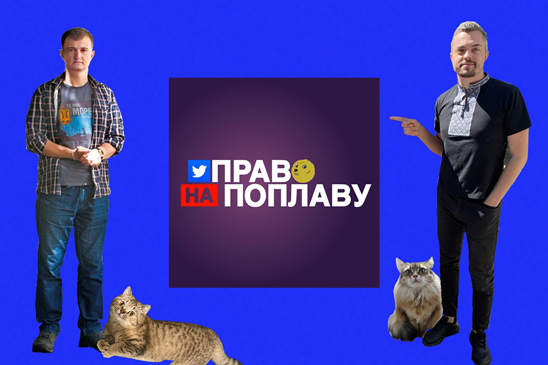
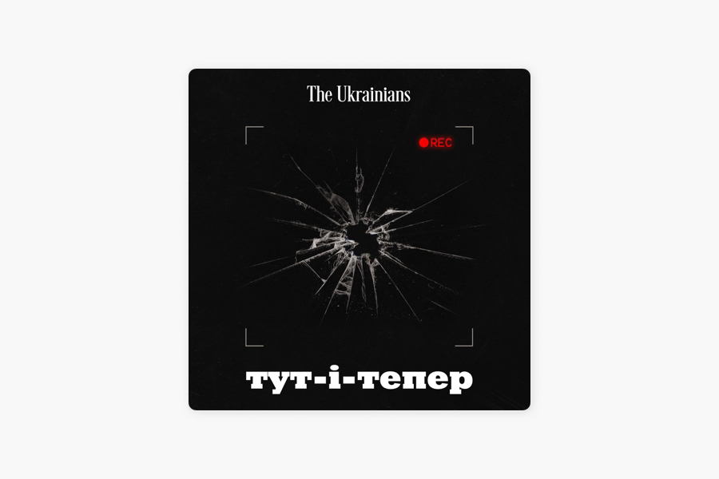

«Право на поплаву»
Спочатку, ще в січні 2022 року, це була аудіокімната у твіттері, що допомагала українцям «розкрутитися», тобто позбутися нав’язливих думок про повномасштабне вторгнення. Олег Новіков і Валерій Агєєв регулярно збиралися, запрошували різних спікерів, щоб поінформувати твіттерян про те, що відбувається і до чого варто бути готовими. Аудіопростір згодом став регулярним подкастом — «Право на поплаву». До команди як основний спікер приєднався Тарас Чмут, військовий аналітик і голова БФ «Повернись живим».
Подкаст із твіттерського «розкруту» став популярним медіапроєктом зі своїми традиціями й фірмовими жартами. Наприклад, кожна «Фронтова поплава» завершується бліцпитанням до Тараса Чмута, що вже стало мемним і живе поза подкастом:
— Що там по р*усні?
— Р*сні п*зда.

«Тут-і-тепер: Історії журналістів на війні»
П’ятнадцять історій людей, які борються на інформаційному фронті. В тилу чи на передовій, із фото- чи відеокамерою, у прямих ефірах чи записах. Розповіді про українських журналістів, які висвітлюють і осмислюють повномасштабну війну з Росією. Дехто з них, до речі, долучився до ЗСУ, але й звідти знаходить час і можливість фіксувати нинішні реалії.
Серед героїв проєкту — публіцист, теле- і радіоведучий Віталій Портников; документалістка й фотографка Юлія Кочетова; видавець The Village Україна Андрій Баштовий; журналістка видання The Reporters і комунікаційниця БФ «Повернись живим» Ольга Омельянчук та інші.
«Тут-і-тепер: Історії журналістів на війні» — це спільний проєкт Українського ПЕН-клубу та The Ukrainians Media в межах премії Ґонґадзе за підтримки благодійного фонду Smart Foundation, Шведського ПЕН і Національного фонду на підтримку демократії.
